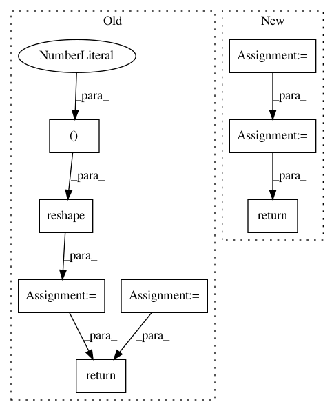

d37d08d9b2a806b3345fba41711c0d517b92a65c,chainercv/links/model/vgg/vgg16.py,VGG16Layers,predict,#VGG16Layers#Any#,215
Before Change
if self.do_ten_crop:
n = y.shape[0] // 10
y_shape = y.shape[1:]
y = y.reshape((n, 10) + y_shape)
y = self.xp.sum(y, axis=1) / 10
return cuda.to_cpu(y)
def _max_pooling_2d(x):
return F.max_pooling_2d(x, ksize=2)
After Change
activation = self._gather_ten_crop(activation)
activations[name] = cuda.to_cpu(activations)
else:
activations = cuda.to_cpu(activations.data)
if self.do_ten_crop:
activations = self._gather_ten_crop(activations)
return activations
def _gather_ten_crop(self, y):
xp = chainer.cuda.get_array_module(y)
n = y.shape[0] // 10
In pattern: SUPERPATTERN
Frequency: 3
Non-data size: 8
Instances
Project Name: chainer/chainercv
Commit Name: d37d08d9b2a806b3345fba41711c0d517b92a65c
Time: 2017-06-15
Author: yuyuniitani@gmail.com
File Name: chainercv/links/model/vgg/vgg16.py
Class Name: VGG16Layers
Method Name: predict
Project Name: keras-team/keras
Commit Name: 8f2b5f0458cce4e5588238b86e3e2738952ea849
Time: 2015-11-19
Author: francois.chollet@gmail.com
File Name: keras/layers/convolutional.py
Class Name: MaxPooling1D
Method Name: get_output
Project Name: dmlc/gluon-cv
Commit Name: ee602b6f68f0bdd19f449a86955697f8f0a2d54c
Time: 2019-09-21
Author: yizhu59@gmail.com
File Name: gluoncv/data/transforms/video.py
Class Name: VideoNormalize
Method Name: forward